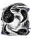

Descrição: Sortilégio que converte almas em uma grande massa de escuridão. Essa pesada massa dança para mostrar a alegria de sua libertação ou talvez somente para provocar os inimigos.
Sortilégios são uma expressão da depravação humana, da qual esta dança é um ótimo exemplo.
Localização:
Usos: 3
